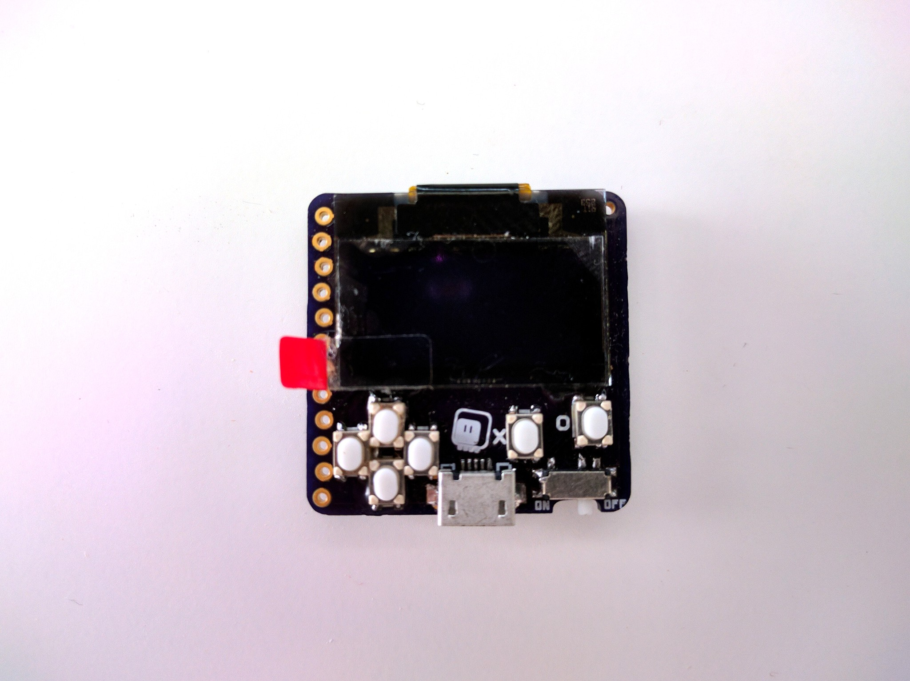
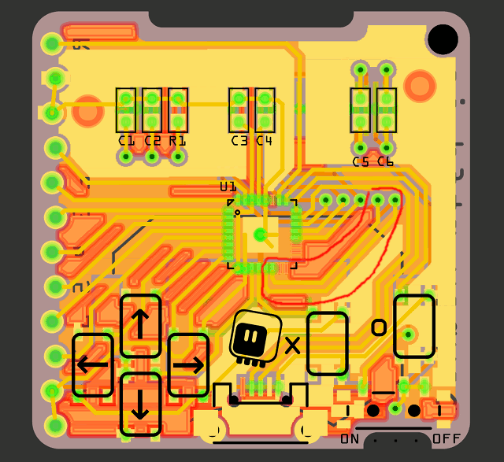

Ugh, Software¶
Published on 2019-06-24 in PewPew M4.
I finally found some time today to actually flash the CircuitPython firmware on this device, and test it. Long story short, I will need another version.
But let’s start from the beginning. Some week ago a second order for the buttons finally arrived (the first one is still “on its way” after 2 months), so I assembled both the D1 Mini UI Shield and this little device. But testing it requires making a new board definition for CircuitPython, and also burning the bootloader, so didn’t bother with that — only updated the photo on the project.
Today I finally got to it. I had my J-Link out already, because I was re-flashing the bootloader on some older projects, so I quickly uploaded it to this one as well. That got me the energy to also copy and modify the board definition of that OLED board I was prototyping with earlier. Flashed it, copied the pew.mpy and the games, inserted the battery, switched on, and… InvalidPinError.\
Turns out the pins PA17 and PA18, despite being marked in the SAMD21 datasheet as supporting SPI, can’t be used for SPI with CircuitPython. I’m not entirely sure why, to be honest, but I suspect it has something to do with one of the SERCOM peripherals being used for something else. And of course I didn’t think about testing it before. Well, technically it’s not a show-stopper, I will just need to pick another two pins, and there is a whole bunch of them free in there. In fact, I already amended the PCB design to use PA10/PA11, which I also tested to make sure they work:
But that means a new PCB order, and desoldering/re-soldering of all the components, and I still don’t even know if the coin cell battery is going to be able to power the thing with the display on, and it would be awfully nice to know that before I make yet another prototype (because then I could switch to a LiPO coin cell, and add a charging circuit). So what can be done?
Bodging the wires doesn’t look like a viable option with the QFN chip hiding under the hot-glued display. The pins are just visible at the edge, but I don’t think I have such thin wires at hand, and the surface is too small to actually support a good attachment.
I could attach wires only on the display side, and provide the signals that switch it on from some other microcontroller. But that is a lot of wires and work, and I just remembered about the bitbangio library, which lets you have software SPI on any pins. All I have to do is enable it to be included in the firmware, and add “import bitbangio as busio” to my library file. A bit of fumbling to restore the previous pin definition, and I have a ready firmware to flash. And… nothing. The device keeps restarting on the battery power. Yay.
A quick swap of the battery to a rechargeable one, and lo and behold:
So now I know I will need to squeeze that battery charging circuit in there somewhere. But I will leave that for some sleepless night.